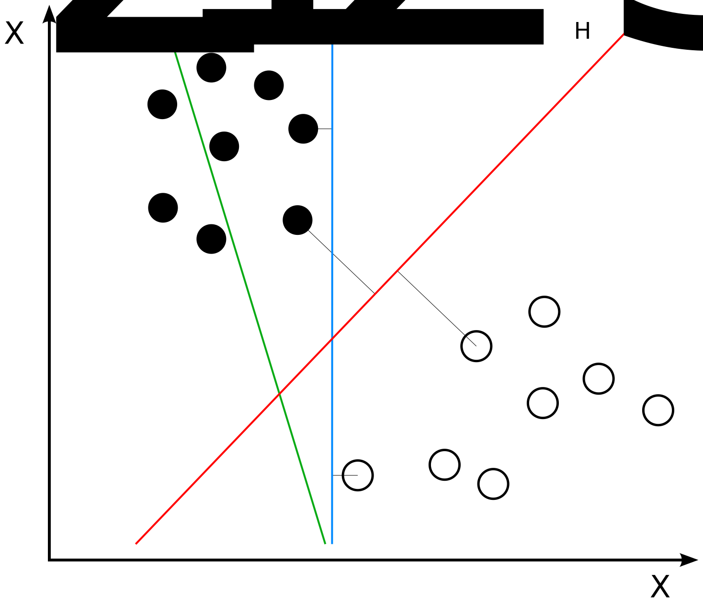

name: title class: center, middle # Machine Learning: .di-orange[Data Foundation + Algorithms & Applications] # .di-orange[Day 2] ??? # Question to Ask: --- name: visualization class: center, middle, di-style # Visualization ??? # Key Points: # Question to Ask: --- # Objective * Lay down some basic visualization theory * Learn about the various types of data visualization tools * Learn some basic Python techniques ??? # Key Points: # Question to Ask: --- class: center, middle # Data Science Pipeline .footnote["Doing Data Science"] ??? # Key Points: # Question to Ask: --- class: center, middle ## GOAL: communicate the MOST ideas, in the LEAST amount of time, with the LEAST amount of ink, in the LEAST amount of space .footnote[Edward Tufte] ??? # Key Points: * we're trying to have a high bandwidth communication between the person making the visualization and the person or persons consuming it # Question to Ask: --- .center[## Charles Minard's graphic of Napoleon's Russian campaign of 1812 ] ??? # Key Points: * Napoleon conquered Europe, wanted to go after British * but...the English Channel * so he imposed economic sanctions against the British * but the Russians said we'll sell stuff to the Brtish * Napoleon's hand was forced and he had to go attack them during WINTER -- * Number of men present represented by widths of the colored zones -- * brown designates men who enter Russia, the black those who leave it -- * 1 mm = ten thousand men # Question to Ask: --- class: center ## Space Shuttle Challenger Explosion: January 28, 1986 ??? # Key Points: - it was unseasonably cold in Florida, engineers wanted to abort the launch - much colder than all previous launches - too much pressure from Washington so the launch happened - problem was the O-rings cracked due to the cold, and pressure escaped # Question to Ask: --- class: center, middle # Hiding the Story with "Chart Junk"? <img src="images/o-ring-1.png"/> ??? # Key Points: - possibly trying to hide the story with "chart junk" - legend for failures not shown in this image - the image shows two "rockets" per luanch, which is just wasted space - not clear about the temperature relationship to O-ring damage - looks like time vs. failure, rather then temperature # Question to Ask: --- class: center, middle # Challenger Data Redrawn by Tufte ??? # Key Points: - too cold to launch the challenger that day - visualization tool impacts how we tell our story # Question to Ask: --- class: center, middle ??? # Key Points: * a little xkcd humor # Question to Ask: --- class: center, middle # Timeseries Data ??? # Key Points: * Why is this a useful visual strategy for time-oriented data? # Question to Ask: --- class: center, middle # Bar Charts ??? # Key Points: * useful for categorical data * error bars shows confidence intervals, i.e., how low/high we think the value could actually be # Question to Ask: --- class: center, middle # Histograms ??? # Key Points: * can map ranges of contiguous data into some numbers of buckets # Question to Ask: --- class: center, middle # The Iris Data Set .footnote[CC BY-SA 3.0] ??? # Key Points: * Ronald Fisher (1936) * oft-used for many statistical classification techniques in machine learning * the sepal is the part of the iris between the petals # Question to Ask: --- class: center, middle # Box and Whiskers Plot ??? # Key Points: * box is the interquartile range * the red line is the median * the two black lines are max and min (or 75th and 25th percentile) # Question to Ask: * where is there more variance? --- class: center, middle # Scatter plots ??? # Key Points: # Question to Ask: --- class: center, middle # Scatter Plot Matrices ??? # Key Points: * in this example, we are comparing various attributes of automobiles * disp(lacement) = essentially the size of the engine * drat = rear axle ratio ("drive ratio") = # of turns of driveshaft requred to turn the rear axle * wt = weight, mpg = miles per gallon # Question to Ask: * What kind of relationships can we discern from these scatterplots? * Do they make sense? --- class: center, middle, di-style # Demo: .di-orange[Data Visualization] ??? # Key Points: # Question to Ask: --- name: Demo4 # Demo: Data Visualization * there are screenshots in this presentation to maintain continuity, but let's open the notebook named __`Demo - Data Visualization.ipynb`__ and go through it together, then there is an exercise to do on your own * when done, click <a href="#Exercise5">here</a> to skip screenshots --- ```python # show.py import matplotlib.pyplot as plt import numpy as np x = np.linspace(0, 10, 100) plt.plot(x, np.sin(x)) plt.plot(x, np.cos(x)) plt.show() ``` -- ```bash > python show.py ``` -- .center[<img style="height: 300px;" src="images/vis-1.png">] ??? # Key Points: # Question to Ask: --- # Saving Image Files .center[<img style="height: 125px;" src="images/vis-3.png"/>] ??? # Key Points: # Question to Ask: --- # Show Image Files .center[] ??? # Key Points: # Question to Ask: --- # Show Available File Support .center[] ??? # Key Points: # Question to Ask: --- # MATLAB-Style Interface .center[] ??? # Key Points: # Question to Ask: --- # Object-Oriented Interface .center[<img style="height: 500px;" src="images/vis-7.png"/>] ??? # Key Points: # Question to Ask: --- # Set up a Grid .center[<img style="height: 500px;" src="images/vis-8.png"/>] ??? # Key Points: # Question to Ask: --- # Draw a Function .center[<img style="height: 500px;" src="images/vis-9.png"/>] ??? # Key Points: # Question to Ask: --- # Ways to Specify Color .center[<img style="height: 400px;" src="images/vis-10.png"/>] ??? # Key Points: # Question to Ask: --- # Ways to Specify Line Style .center[] ??? # Key Points: # Question to Ask: --- # Setting Axes Limits .center[<img style="height: 500px;" src="images/vis-12.png"/>] ??? # Key Points: # Question to Ask: --- # Flipping the Axes Limits .center[<img style="height: 500px;" src="images/vis-13.png"/>] ??? # Key Points: # Question to Ask: --- # Axis .center[] ??? # Key Points: # Question to Ask: --- # Tight Fit .center[] ??? # Key Points: # Question to Ask: --- # Equal Aspect Ratio .center[] ??? # Key Points: # Question to Ask: --- # Labels .center[] ??? # Key Points: # Question to Ask: --- # Legends .center[] ??? # Key Points: # Question to Ask: --- # Object-Oriented Interface .center[] ??? # Key Points: # Question to Ask: --- # Interface Differences .compact[ | MATLAB-Style | OO Style | |--------------|-----------------| | plt.xlabel() | ax.set_xlabel() | | plt.ylabel() | ax.set_ylabel() | | plt.xlim() | ax.set_xlim() | | plt.ylim() | ax.set_ylim() | | plt.title() | ax.set_title() | ] ??? # Key Points: # Question to Ask: --- # Specifying Markers .center[<img style="height: 450px;" src="images/vis-20.png"/>] ??? # Key Points: # Question to Ask: --- # Scatterplot with Colors and Sizes .center[] ??? # Key Points: # Question to Ask: --- # Visualizing Multiple Dimensions .center[] ??? # Key Points: # Question to Ask: --- # Histograms .center[<img style="height: 500px;" src="images/vis-23.png"/>] ??? # Key Points: # Question to Ask: --- # Customizing Histograms .center[<img style="height: 500px;" src="images/vis-24.png"/>] ??? # Key Points: # Question to Ask: --- # Customizing Legends .center[<img style="height: 500px;" src="images/vis-25.png"/>] ??? # Key Points: # Question to Ask: --- # Customizing Legends .center[<img style="height: 500px;" src="images/vis-26.png"/>] ??? # Key Points: # Question to Ask: --- # Customizing Legends .center[] ??? # Key Points: # Question to Ask: --- name: Exercise5 class: center, middle, di-style # Exercise: .di-orange[Data Visualization] (open the notebook named __`Exercise 5 - Data Visualization.ipynb`__) --- name: data-science class: center, middle, di-style # Data Science ??? # Key Points: # Question to Ask: --- # Objective * Understand the various sides of Data Science * Consider the activities of a data scientist * Understand the issues of personal bias and narratives ??? # Key Points: # Question to Ask: --- class: center, middle, di-style .quotation[Data scientist: n. person who is better at statistics than any software engineer and better at software engineering than any statistician.] .quotation-source[Josh Wills] ??? # Key Points: * software engineers bring a discipline to the table in terms of cadence * continuous integration, continuous deployment, DevOps, etc. * statisticians traditionally don't have practice software engineering * important to build teams which balance out the skills and discipline of software engineering along with statistics, research, etc. # Question to Ask: --- class: center, middle # Data Science <img style="height: 450px;" src="images/data-science-venn.png"> .footnote["Drew Conway"] ??? # Key Points: * hacking skills = the positive aspects of the comp sci discipline * traditional research = economists, social scientists, etc. * data scientists are communicators * there is a LOT to learn * lots of resources available * very difficult to know it all * "ML as a platform" may not succeed because there is no data science # Question to Ask: --- class: center, middle # Why is the discipline so important? ??? # Key Points: # Question to Ask: --- # Famous example of the consequences of bad data: 1936 U.S. Presidential Election * Literary Digest conducted a mailed survey of 10 million (!) people in order to predict the winner of the 1936 U.S. presidential election * participants chosen from telephone directories, lists of magazine subscribers, club rosters * 2.5 million (!) people responded * overwhelmingly believed Alf Landon would beat Franklin Roosevelt * George Gallup polled 50,000 people and got it right...why? ??? * problems: selection bias (only rich people were sampled) and response bias (only 25% responded–even though that's still a lot of responses, there could have been something about the people that responded that skewed the results) -- .center[] ??? # Key Points: --- class: center, middle, di-style .quotation[Long before worrying about how to convince others, you first have to understand what's happening yourself.] .quotation-source[Andrew Gelman] ??? # Key Points: # Question to Ask: --- class: center, middle # Data Science Pipeline .footnote["Doing Data Science"] --- class: center, middle, di-style .quotation[Naïve realism, also known as direct realism or common sense realism, is a philosophy of mind rooted in a theory of perception that claims that the senses provide us with direct awareness of the external world.] .quotation-source[http://en.wikipedia.org/wiki/Naïve_realism] ??? # Key Points: * The idea is that things happen in the world and we are just perceiving them. # Questions to Ask: * What do you think of that? * Is this a true statement? --- # 1951 Princeton/Dartmouth Football Game -- * Storied rivalry -- * Princeton's star player's nose was broken * Another Princeton player retaliated and broke Dartmouth player's leg * Princeton won (13-0) * Both teams blamed the other side ??? # Key Points: * Both teams blamed the other side..... # Question to Ask: * Do you follow any sports or have a favorite team? Does your team have an arch-enemy team? --- # "They Saw a Game" -- * Albert Hastorf (Dartmouth) and Hadley Cantril (Princeton) decided to study this. * They showed the game again to students from both schools * Asked them to notice infractions, penalties, fill out a questionnaire about the game ??? # Question to Ask: * What do you think the results were? -- * Princeton students 'saw' twice as many infractions by Dartmouth players than Dartmouth students did * Dartmouth students saw a 'rough but fair' game -- * __Two versions of the Truth__ ??? * In US football, the Superbowl is a "big" game. The World Cup matches are "big" games. * Are any of you football or soccer fans? What sport? * Have you ever seen a game or talked about a "big" game with someone who saw that game very differently? * Can you tell us an example of this? --- class: center, middle, di-style .quotation[ In brief, the data here indicate that there is no such 'thing' as a 'game' existing 'out there' in its own right which people merely 'observe.' The game 'exists' for a person and is experienced by him only insofar as certain happenings have significances in terms of his purpose.] .quotation-source[Hastorf and Cantril] ??? # Key Points: # Question to Ask: --- class: center, middle, di-style .quotation[Everything that has ever happened to you has happened inside your skull.] .quotation-source[David McRaney, "You Are Now Less Dumb"] ??? # Key Points: * Our perception IS our reality - the "game" study proves it. (same game, two versions of the truth) * This starts to feel like the Matrix - and it is. # Question to Ask: * --- # Compare the Students * All male * Mostly similar ethnically and socioeconomically * Geographically similar * Similar in age * Similar basic cultural and religious beliefs -- * Only difference...Went to different schools ??? # Key Points: * This is almost a controlled experiment - all the variables are the same except one - what school they went to. * This is why a 1951 football game is in this class - when/where would you get two groups of such similar characteristics now? * "Reality" based on which school they went to. # Question to Ask: --- class: center, di-style # The Dress <img src="images/220px-The_Dress_(viral_phenomenon) (1).png" width="320"/> What colors are in this dress? ??? # Key Points: * In 2015, an image showed up on social media. * People saw the image as either a blue dress w/ black stripes or a white dress with gold stripes. * It does look different on different devices... but that's not the issue. # Question to Ask: * Did you see the dress? What color do you see? * Does it look different on your computer on the .pdf? --- class: center # The Dress When there is uncertainty, our brains choose a way to perceive. <br/>But we are often not aware we made a choice. <a href="http://www.slate.com/articles/health_and_science/science/2017/04/here_s_why_people_saw_the_dress_differently.html" target=_new>The Dress Controversy</a> ??? # Key Points: * Color choice here is a cognitive function (not a optical or visual processing function) based on what we think the lighting of the photo is. * On a cell phone, on social media, with non-professional photographers, it introduces doubt in our minds. The original picture was in the middle of the continum shown by the GIF ... * "The brain confidently fills in the gaps in knowledge by making assumptions." * Just like which school (Dartmouth or Yale) you went to... we are cognitively choosing which way to see the image. * It can be very difficult to detect these choices. # Question to Ask: * --- class: center, middle, di-style .quotation[It’s a real problem, though, when politicians, CEOs, and other people with the power to change the way the world works start bungling their arguments for or against things based on self-delusion generated by imperfect minds and senses.] .quotation-source[David McRaney, "You Are Now Less Dumb"] ??? # Key Points: # Question to Ask: --- class: center, middle, di-style .quotation[Narratives are meaning transmitters. They are history-preservation devices. They create and maintain cultures, and they forge identities that emerge out of the malleable, imperfect memories of life events.] .quotation-source[David McRaney, "You Are Now Less Dumb"] ??? # Key Points: * Humans make stories - we are wired for it. * Stories have narrative - a beginning, a middle, an end. Causes and effects. # Question to Ask: --- class: center, middle, di-style .quotation[Your narrative bias makes it nearly impossible for you to really absorb the information from the outside world without arranging it into causes and effects.] .quotation-source[David McRaney, "You Are Now Less Dumb"] ??? # Key Points: * Our human memory storage medium is stories, and stories have narrative. * Our "memory format" almost requires cause-effect. # Question to Ask: * What if there is not actually cause and effect in the facts you want to remember? (they are just correlated)? Answer: we usually create cause-effect involuntarily due to narrative. --- class: center, middle, di-style .quotation[Your ancestors invented the scientific method because the common belief fallacy renders your default strategies for making sense of the world generally awful and prone to error.] .quotation-source[David McRaney, "You Are Now Less Dumb"] ??? # Key Points: * The scientific method is more accurate than our default way of making sense of the world. # Question to Ask: * How do we apply the scientific method in software engineering now? (think CI/CD) * Answer: each unit test is like a small hypothesis checking our code reality, running the tests w/ CI - constantly, whenever change is introduced re-check our hypothesis. * * What would applying the scientifc method look like for data science? * Answer: really forming hypothesis, running experements, measuring the results, accepting that some will succeed and others fail, using stats to compute our confidence in our predictions. --- name: data-directed class: center, middle, di-style # Data-Directed ??? # Key Points: # Question to Ask: --- # Objective * Understand the basics of machine learning and how it can direct our activities * Consider the issues of generalizing from observations of the world * Explore _supervised_ and _unsupervised_ learning strategies * Be introduced to a handful of basic and widely-used techniques * Learn how to use them on basic problems ??? # Key Points: # Question to Ask: --- class: center, middle # Data Science Pipeline .footnote["Doing Data Science"] ??? # Key Points: # Question to Ask: --- class: center # Is this what happens when robots learn? -- ??? # Key Points: # Question to Ask: --- class: center # Or is it more like this? -- <a href=https://youtu.be/rVlhMGQgDkY?t=85 target=_new> <img src=images/robot.png> </a> -- ## https://youtu.be/rVlhMGQgDkY?t=85 ??? # Key Points: # Question to Ask: --- # Societal Impact -- * New technologies always bring new jobs (and take them away) -- * ...and in some cases these technologies is distrupting faster than we can retrain displaced workers -- * JP Morgan has software to find anomalies in contracts–<a href=https://www.bloomberg.com/news/articles/2017-02-28/jpmorgan-marshals-an-army-of-developers-to-automate-high-finance target=_new>can do in seconds what took lawyers 360,000 hours</a> -- * cancer detection, such as <a href=https://www.analyticsvidhya.com/blog/2018/04/googles-machine-learning-model-can-detect-cancer-real-time target=_new>this</a> and <a href=https://youtu.be/toK1OSLep3s target=_new>this</a> -- * How can software perform better than someone with decades worth of education and experience? -- * (Note that in the second example above, radiologists were outperformed by software built by non-experts) -- * Self-driving cars and long-haul trucks -- * not only will drivers be out of work, think of the truck stops -- * No easy answers, but it's clear we have to consider these issues! --- class: center # IBM's Question Answering System–Watson <a href=https://www.youtube.com/watch?v=WFR3lOm_xhE&t=20 target=_new> </a> -- ###https://www.youtube.com/watch?v=WFR3lOm_xhE&t=20 ??? # Key Points: * Watson on Jeopardy * Big part of the project was preparing data * Downsized to a desktop * Series of analytical techniques: question answering, natural language processing, information retrieval, statistical analysis * Can pull data from arbitrary places * When it needed data to answer questions it went to linked data # Question to Ask: --- .center[ # B.F. Skinner ] -- * trained pigeons to do various tasks including play ping pong by rewarding them for the behavior he wanted them to exhibit (operant conditioning) -- * also trained pigeons to be superstitious–what does that mean and what does it have to do with machine learning? ??? # Key Points: * B.F. Skinner trained pigeons to play ping-pong and push buttons to get rewards * He was also able to train them to be superstitious * randomly rewarded pigeons and they associated the reward with whatever they were doing (e.g., lifting their feet) * ML will be happy to "be superstitious" and learn nonsense * superstition is when we try to explain the world and we do not know how to explain it # Question to Ask: --- class: center, middle, di-style .quotation[The term machine learning refers to the automated detection of meaningful patterns in data.] .quotation-source[ Source: Shavel-Shwartz and Ben-David, "Understanding Machine Learning: From Theory to Algorithms"] ??? # Key Points: * if we can find the patterns in the data, we don't need ML # Question to Ask: --- # Advancement of Machine Learning ??? * We got here because we're at the right place at the right time in history * The combination of need and technology and opportunity are all here -- - Stock market prediction in the 1980s ??? * You don't have do that well or be that accurate to make a ton of $$$ * In physics, 3 laws explain 97% of the phenomena–in finance 97 laws explain 3% of the phenomena * That industry sucked up all the talent -- - Mining corporate databases in the 1990s (direct marketing, CRM, credit scoring, fraud detection) ??? * one company would buy another * "data mining" instead of the term "machine learning", but were influenced by the academics -- - E-commerce (personalization, click analysis) ??? * advertiser's dream, analyzing clicks instead of people physically going to stores * we had the technology to analyze behavior well before something like Amazon Go -- - 9/11 brought interest to applying ML to fighting terror ??? * unlocked budgets for somewhat speculative kinds of things -- - Web 2.0 (social networks, sentiment analysis, etc.) ??? * more data that we could've imagined * big data, so we have places to put it -- - Science (molecular biologists and astronomers were early adopters) ??? * science budgets started to be slashed -- - Housing bust freed up a lot of talent ??? * financial folks found demand in the analysis space -- - Big Data ??? * tools are advancing * right place, right time ??? # Key Points: # Question to Ask: --- class: center, middle # David Hume ??? # Key Points: * was a Scottish philosopher, historian, economist, and essayist * empiricism is a theory that states that knowledge comes only or primarily from sensory experience * description => prediction => prescription * fundamentally human problem: how do we draw conclusions from our experience? * Hume's writing on empiricism that helps define the scientific method * that's why statistics and hypothesis testing and so on are important * we need to understand that the context from which we are drawing conclusions as we imagine it # Question to Ask: --- class: center, middle # Inductivist Turkey .footnote[CC BY 2.0, https://www.flickr.com/photos/29311691@N05/3577002803] ??? # Key Points: * Bertrand Russell * turkey fed every morning around 9am * turkey looks at his data and concludes that he'll be fed every day at 9am * and that day was Thanksgiving * meaning–just when you think you understand something, it can change! # Question to Ask: --- class: center, middle # Tycho Brahe ??? # Key Points: * took copious notes about the position of the planets for years * no theories, just taking notes # Question to Ask: --- class: center, middle # Johannes Kepler ??? # Key Points: # Question to Ask: * Kepler used Brahe's data to extrapolate into the more general theories of elliptical orbits which then helped influence Isaac Newton and then general theories of motion --- class: center, middle # Isaac Newton ??? * go back to Tycho Brahe slide... * this is what Big Data and ML are going to do for us * Tycho Brahe = big data * we now have places to put all these data * doesn't have to be highly structured as it was historically * we're collecting data, we don't know it's going to be useful * Kepler = ML * analyze data and draw general conclusions * but conclusions are not immediately acted upon * there are still humans in the loop that are evaluating the results and making decisions about whether they're useful * some concerns about what ML can do for us is nothing more than concerns about how the data are being used * we are Newton * drawing conclusions, translating it into business value, business strategy * too much data for us to look at ourselves --- class: center, middle, di-style # .di-orange[Machine Learning] Approaches --- name: supervised-learning # Supervised Learning ??? * looking at the inputs and the outputs (classification, an outcome, etc.) and what is it about the inputs that are most highly correlated with the outputs? * classification - placing something into a category based upon its characteristics (attributes, qualities) * regression - a measure of the relation between the mean value of one variable (e.g., output) and corresponding values of other variables (e.g., time and cost) -- #### `$$\text{Given input variables x and an output variable Y} $$` #### `$$Y = f(x)$$` To train the model, the inputs and outputs are known and are used to determine f(x). The trained model f(x) outputs one of two types of outputs: classification and regression. ??? # Question to Ask: * How could this information be useful? * we have observed data with known outcomes, and if we're able to figure out what that transformation function is, we're able to apply it previously unseen data * that's the Holy Grail of ML -- * Classification, i.e., classifying input into two or more categories (e.g., benign vs. malignant tumors) -- * Regression - the output variable takes continuous values (e.g., how much would we expect this house to sell for, based on square footage, location, etc.) ??? * we use supervised learning mostly for classification * e.g., at a bank, we've seen in the past that customers who look like this, pay back their loans * so we might try to do is to classify them as a good credit risk or a bad credit risk * e.g., we've seen customers who look like this spike out of control in our infrastructure * we want to be able to classify and identify those kinds of customers as part of the onboarding process so we can attach them to machines/pods that have capacity to meet those spikes * we're not sure what those attributes are, which is why we're using ML * ...to help us find what those things are # Key Points: * we also maybe want to be able to make predictions about what to expect from a numeric perspective * customers of this size who'ves spent this much in the first year tend to stick around as customers for five years * if I know that I can start to reach out to them and work to keep them --- class: center, middle # Supervised Learning partition dataset into training set and test set ??? # Key Points: - Why don't we just train on all the data we have? - __we could overfit our model__ - __we use part of data for training and part to test the final model__ - If we get a different result from using different data, is that high bias or high variance? - Different data giving different results is high variance (overfit) - If we do some training and we make some assumptions about the model (e.g., linear relationship) that aren't correct, then it's a problem of bias # Question to Ask: --- name: linear-regression # Linear Regression #### relating your input (sometimes called "independent variable") to your output ("dependent variable") by fitting a straight line through your data -- .center[ ] ??? # Key Points: # Question to Ask: --- # Ordinary Least Squares -- - Simple Linear Regression -- - Fit a straight line through the observed points -- - Minimizes the sum of square residuals (errors) of the model -- ??? # Key Points: # Question to Ask: --- # Hypothetical Business: The Zappos of Pants -- * Where is the business risk? -- * too many returns -- * If customers don't know their inseam, it'll be hard for them to measure -- * We'd like to ask questions of our customers and use that as a proxy for their inseam -- * ...but we don't know what to ask -- * So we gather a bunch of data from a population, which needs to be representative of the population we want to market to -- * ...then what? -- * look for a relationship between one of the variables and inseam ??? # Question to Ask: --- # Linear Regression .compact.center.middle[ | Pros | Cons | |----------------------------------------------------------------------------------|--------------------------------------------------------| | Common approach for numeric data | Strong assumptions about the data (linearity) | | Easily interpretable | Sensitive to outliers | | Estimates strength and size of relationships among features and outcomes | Only numeric features || ] ??? # Key Points: # Question to Ask: --- class: center, middle, di-style # Demo: .di-orange[Linear Regression] ??? # Key Points: # Question to Ask: --- name: Demo6 # Demo: Linear Regression * let's open the notebook named __`Demo - Linear Regression.ipynb`__ and go through it together --- name: Exercise6 class: center, middle, di-style # Exercise: .di-orange[Linear Regression] (open the notebook named __`Exercise 6 - Linear Regression.ipynb`__) --- name: naive-bayes class: center, middle, di-style # Naive Bayes ??? # Key Points: * Frequentists - tried to kill funding for people doing Bayesian, what to kill that beliefs about the world have any play in statistical analysis * Used for spam filtering, is fast does not need a lot of data # Question to Ask: --- # Naive Bayes -- - Family of algorithms to produce probabilistic classifiers based on Bayes Theorem -- - Bayes Theorem is named after the Reverend Bayes an 18th century statistician and philosopher -- - Never published in his lifetime -- ### Features - Determines probability based upon context, and the probabilities are updated as more information is received - Starting probabilities can be arbitrarily set - Requires relatively little training data - Often used for text/document classification - Assumes independence of the features ??? # Key Points: * No connection between events, this is why its called Naive * Math we assume no connection because math is easier # Question to Ask: --- ### `$$P(A | B) = \frac { P(A \cap B) }{ P(B) }$$` -- ### `$$P(A | B) = \frac { P(A \cap B) }{ P(B) } = \frac{P(B|A) \cdot P(A)} {P(B)}$$` ### `$$P(spam|Viagra) = \frac { P(Viagra|spam) \cdot P(spam) } { P(Viagra) }$$` ??? # Key Points: * P(spam) = supervised learning problem (corpus of messages, labeled outcomes) * P(Viagra|spam) = just take a guess...10% * https://www.youtube.com/watch?v=Q8l0Vip5YUw # Question to Ask: --- # Naive Bayes .compact.center.middle[ | Pros | Cons | |-----------------------------------------------------------|-------------------------------------------------------------------| | Simple and effective | Assumption of the independence of features is usually wrong | | Does well with noisy and missing data | Doesn't work well with lots of numeric features | | Works well with arbitrary sizes of training data | Estimated probabilities aren't as reliable as the classifications | | Easy to produce the estimated probability for predictions | | ] ??? # Key Points: # Question to Ask: --- name: k-nearest-neighbors class: center, middle, di-style # k-Nearest Neighbors --- name: k-nearest-neighbors # k-Nearest Neighbors -- * k-NN Classification -- * output is class membership -- * object is classified by a majority vote of its neighbors -- * for k = 1, then the object is simply assigned to the class of that single nearest neighbor -- * k-NN Regression -- * output is the property value for the object -- * this value is the average of the values of its k nearest neighbors ??? # Key Points: - A statistical method is called non-parametric if it makes no assumption on the population distribution or sample size. - Let's say I wanted to get a sense of how old people at salesƒorce are? - How would I do that? - If I have the data then I can find the median or the mean. - How useful is that for predicting individual results though? - Not great, good to describe a group, but not individuals # Question to Ask: --- class: center, middle <img height="500px" src="images/KnnClassification.svg"/> .footnote[http://en.wikipedia.org/wiki/K-nearest_neighbors_algorithm#/media/File:KnnClassification.svg] ??? # Key Points: - I have the data here and I'm trying to figure out if you (the new data point [the green circle]) is more like a red triangle or a blue square? - The K in K-nearest neighbors is how many neighbors I use to try to answer the question. - In the first scenario if I pick 3, now that I have spatialized you in an interesting way, two of the closest 3 will be red so I will consider you a red triangle as well. - If I pick a K of 5, then 3 of the nearest 5 are blue squares, so I will consider you a blue square. - Data Scientists sound like "I dunno, try this, try this" K-nearest neighbor is one of those things because for different data sets, different Ks will work better. # Question to Ask: - What is the lowest K? - 1 - Why is that dangerous? - gives too much power to your nearest neighbor - What is the upper bound of K? - The entire population. (N) - If we get a better result by comparing you to those you are closest to, what happens to that result as K becomes closer to N? - Devolves to the average. - What K should you use? - It depends! Different data sets and different types of problems means different results and different methods of getting there. - If I say you are more like a junior engineer than a senior engineer, find the closest junior engineers and average your results. - Looking at a smaller subset of data that you are more alike tends to result in a better prediction than comparing you to the entire population. - Salesƒorce nearest neighbor applications? - There is a team called Hammer, they deal with automated testing - Customer tests - The rate at which they fail is tremendous, because the amount of data is enormous - They use K-nearest neighbors to categorize failures that have the same underlying cause. - Guess work, more of a why these things (tests) fail - finding some distance metric allows them to determine what is failing and why - Divide and conquer, how can we make k-cuts to split this up so we can get a better idea of what we are working on. --- class: center, middle <img src="images/Data3Classes.png"/> .footnote[http://commons.wikimedia.org/wiki/File:Data3classes.png] ??? # Key Points: - It devolves into here are a set of categories, # Question to Ask: --- class: center, middle <img src="images/Map1NN.png"/> .footnote[http://commons.wikimedia.org/wiki/File:Map1NN.png] ??? # Key Points: - Here is a K of 1 - you always have an answer but it is just because whatever is closest to you is telling you what you are. # Question to Ask: --- class: center, middle <img src="images/Map5NN.png"/> .footnote[http://commons.wikimedia.org/wiki/File:Map5NN.png] ??? # Key Points: - Higher numbers of K will result in ties - getting pulled in multiple directions and I can't use a pure metric - come up with a heuristic to break ties - Moral of the story: - Too few (`K` too low) = not good - Too many (`K` too high) = less good - Find the right `K`, involves running your experiments multiple times with different knobs turned. # Question to Ask: - Does that make sense? - Salesƒorce nearest neighbor applications? - There is a team called Hammer, they deal with automated testing - Customer tests - The rate at which they fail is tremendous, because the amount of data is enormous - They use K-nearest neighbors to categorize failures that have the same underlying cause. - Guess work, more of a why these things (tests) fail - finding some distance metric allows them to determine what is failing and why - Divide and conquer, how can we make k-cuts to split this up so we can get a better idea of what we are working on. --- # k-Nearest Neighbors .compact.center.middle[ | Pros | Cons | |--------------------------------------------------|----------------------------------| | Simple and effective | Does not produce a model, but does produce a function | | Makes no assumptions about the data distribution | Efficacy affected by choice of k | | Fast training phase | Slow classification phase | ] ??? # Key Points: - Trick Question: Supervised or Unsupervised? - Supervised, special form: instance-based model (there is no real model, no line). - Every new data point changes who is closest to who - Very fast training phase, very slow classification phase (doing all the calculations in the classification phase) - Relatively simple approach with good performance, as an approximation it works surprisingly well # Question to Ask: --- name: decision-trees class: center, middle, di-style # Decision Trees ??? # Key Points: - One of the more popular tools # Question to Ask: --- # Decision Trees ??? # Key Points: - Useful because it is basically a tree classifier or regressor - We are trying to find the connections between the inputs and the outputs, it is very easy to explain if your tree is short and stocky - We try to maximize how much we are able to break up the population at each step. - Ideally, it will be a Binary Tree where each step breaks up the population into half - Makes it easy to search and find or add a new element to the structure - It all comes down to how you break up the data (we won't get into this now) - The ideas is to represent a series of rules that are driven by the data itself and we want it to be useful for both classification and regression tasks. # Question to Ask: -- - Tree-based classifier (like a bunch of _if-then_ statements) -- - Models the relationships between features and outputs -- - Easy to explain to users -- - Can be turned into external representation (i.e., a picture) -- - Supports both classification and regression -- - Builds a tree where each node divides the set of items based on the value of a feature -- - The feature and feature value are chosen based upon which one "best" splits the set of items -- - The "best" split can be determined by several approaches, two common ones are: _gini impurity_ (default in SciKit-Learn) and _information gain_ -- - Gini Impurity seeks to maximize the homogeneity of the subnodes -- - Information Gain seeks to minimize the entropy of the subnodes --- class: center # Decision Tree: Titanic Dataset ??? # Key Points: - Survival Rate is decimal on left, percent of the total population is on the right - Most important attribute and pivot point is are you a man? - If not, survival rate = 0.73 (36% of pop != male) - Female is enough to determine your survivability - Why? - women and children go first - women includes girls, so there is no reason to break that up further - If you are male and 9.5 or older your survivability tanks - If lower than that, you are a child so you have a greater chance of survival - Almost done, 97% of the population is covered, but there is still something that's explaining the difference in the outcomes. - Data can be analyzed to go further and say this attribute satisfies the remaining 3% - SIBSP stands for siblings and spouses, makes sense because: - if you are traveling with other, they will be looking out for you, so you are more likely to survive - 89% survival if you are a boy traveling with your family (2% of the population), 5% survival if you are an orphan boy (also 2% of the population) # Question to Ask: - You've seen the movie (Titanic), so besides Celine Dion what is missing here? - What kind of ticket are you traveling on? A central point of the movie was that rich people are jerks. - Where is that represented in the model? It's either not in the data or it doesn't actually explain anything so it's not a key part of the model. - It is in the data set, so therefore, rich people follow the social norms. - The class of ticket did impact your survival rate, but only indirectly. The majority of people in first class were traveling with family, they had a tribe looking out for them. The majority of people in the lower classes were traveling alone. - Looks like it is just a visualization of a linear regression? - yes, but it identifies pivot points and we are not assuming a linear model - The pivot point could be related to anything, the relationship is there, but it is not necessarily linear. - Compared to a linear model a binary tree is more flexible, which usually means less biased. --- # Decision Tree .compact.center.middle[ | Pros | Cons | |--------------------------------------------|---------------------------------------------------------------------------| | Useful classifier for most problems | Can be biased toward feature splits with several levels | | Automated learning process | Easy to misfit the model | | Supports numeric, nominal and missing data | Small changes in the training data can have been impact on decision logic | | Works with large and small data sets | Large trees may be hard to interpret | | Easily interpreted and efficient | | ] ??? # Key Points: - When they work well = really cool, easy to generate, easy to understand - When they work poorly = tend to overfit the data - Take a look at [Decision Tree Data](src/Decision Tree.ipynb) - When will a linear # Question to Ask: --- name: Demo7 # Demo: Decision Trees * there are screenshots in this presentation to maintain continuity, but let's open the notebook named __`Demo - Decision Trees.ipynb`__ and go through it together * when done, click <a href="#Exercise7">here</a> to skip screen shots ??? # Key Points: - If you're running notebooks in the `sf-ml-data-foundation/src` directory: <a href="http://localhost:8888/notebooks/ML%20-%20Decision%20Tree.ipynb" target="_blank">ML - Decision Tree.ipynb</a> - If you're running notebooks in the `sf-ml-data-foundation` directory: <a href="http://localhost:8888/notebooks/src/ML%20-%20Decision%20Tree.ipynb" target="_blank">src/ML - Decision Tree.ipynb</a> - open <a href="src/iris_tree.png" target="_blank">src/iris_tree.png</a> to show visualization. Or generate from .dot file using command in notebook. --- ```python from sklearn.datasets import load_iris from sklearn.tree import DecisionTreeClassifier ``` ```python iris = load_iris() X = iris.data[:, 2:] y = iris.target ``` ??? # Key Points: - Generate visualization from .dot file using command in notebook. __OR__ open <a href="src/iris_tree.png" target="_blank">src/iris_tree.png</a> to show visualization. - Not magic, just applying math to information that is in our space. Connecting inputs to outputs. - If this has a tendency to over-fit, How can we solve that problem? # Question to Ask: -- ```python tree_clf = DecisionTreeClassifier(max_depth=2) tree_clf.fit(X, y) ``` ```python from sklearn.tree import export_graphviz export_graphviz(tree_clf, out_file="iris_tree.dot", feature_names=iris.feature_names[2:], class_names=iris.target_names, rounded=True, filled=True) ``` -- ```python # dot -Tpng iris_tree.dot -o iris_tree.png ``` ```python tree_clf.predict_proba([[5, 1.5]]) ``` ```python tree_clf.predict([[5, 1.5]]) ``` --- name: Exercise7 class: center, middle, di-style # Exercise: .di-orange[Decision Trees] (open the notebook named __`Exercise 7 - Decision Trees.ipynb`__) --- name: random-forests class: center, middle, di-style # Random Forests ??? # Question to Ask: --- class: center, middle .footnote[http://file.scirp.org/Html/6-9101686_31887.htm] ??? # Key Points: ??? # Key Points: - An Ensemble Approach, A random forest is just a collection of trees. - Each Decision tree is about what to ask in which order - Random decision trees: pick paths randomly, and to the extent that they're over-fitting, average out between the trees. - This produces remarkably good results. - Could use a voting pattern: - Of the 1,000 paths through the tree, 800 give me the same result & take that result. - The classifiers don't need to be the same approach - Enseble could be 4 or 5 different classifiers mixed together - It is uncommon but totally possible to use a bunch of different classifiers. - Use a voting model to pick the results. - Different models will work better on certain parts of the data. - If you average across results you'll get a pretty good improvement on decision trees. --- # Demo: Random Forests * there are screenshots in this presentation to maintain continuity, but let's open the notebook named __`ML - Decision Tree 2.ipynb`__ and go through it together ??? # Key Points: - If you're running notebooks in the `sf-ml-data-foundation/src` directory: <a href="http://localhost:8888/notebooks/ML%20-%20Decision%20Tree.ipynb" target="_blank">ML - Decision Tree.ipynb</a> - If you're running notebooks in the `sf-ml-data-foundation` directory: <a href="http://localhost:8888/notebooks/src/ML%20-%20Decision%20Tree.ipynb" target="_blank">src/ML - Decision Tree.ipynb</a> - Generating examples, then I can bring in a decision tree classifier and apply it to those values. - We are going to gloss over the three functions that help visualize, interact with the tree, and to pick randomized subsamples of the data. - Lets take a look at the interactive tree: - Go to a tree of depth of 1 - Something about the way the data was distributed gives us a nice cut. - The second level gives us another cut that makes sense - the third, fourth and fifth depths make it over-fit. - Same Data, but we are going to take a random subset of it. 75-80% of our data. - Passing in 5 different random data points (0, 5, 10, 25, 100), all of them result in different looking tree - What does that tell us? - Over-fitting, High variance based on the data we are using to generate the model. - Pull in a decision tree classifier, pull in a bagging classifier (allows you to simulate a larger data set) fit that classifier and visualize it - It's a lot cleaner. - By using an ensemble approach, we can average out the weirdness. Running through a forest averages out the over-fitness. - Can be doing 100x the work, but you get a _much_ better classifier. Computationally more expensive, but usually worth it. - Doesn't take a lot of extra code, but the result is much better. - Understanding the shape of your data drives the model you use and is important. - This is from the book _Python Data Science Handbook_ by Jake VanderPlas, all of his examples and the text are open sourced, you can find the content here: - <a href="https://jakevdp.github.io/PythonDataScienceHandbook/" target="_blank">Python Data Science Handbook</a> - <a href="https://github.com/jakevdp/PythonDataScienceHandbook/blob/master/notebooks/05.08-Random-Forests.ipynb" target="_blank">Random Forests</a> # Questions to Ask: --- name: random-forests-pro-con # Random Forests .compact.center.middle[ | Pros | Cons | |-----------------------|-----------------------------------------------------| | Supports both classification and regression. | Computationally expensive.| | Averages out potential bias from Decision Trees.| Less interpretable than Decision Tree. | | ] --- name: support-vector-machines class: center, middle, di-style # Support Vector Machines ??? # Key Points: - One of the last things we'll talk about # Question to Ask: --- # Support Vector Machines * given a set of training examples, each marked as belonging to one of two categories, a _Support Vector Machine_ builds a model that assigns new examples to one category or the other -- * (works with more than two classes, but for simplicity, let's consider only two classes for the time being) -- * the idea is to find the best separation between items in different classes -- * also handles regression, but classification is more common ??? # Key Points: # Question to Ask: --- class: center, middle ## Which vector (hyperplane) separates the classes with the maximum margin?  .footnote[https://en.wikipedia.org/wiki/Support_vector_machine] ??? # Key Points: - It means, if we have data sets like this, observations (white circles and black circles), and we are trying to find decision boundaries that help us classify our data. # Question to Ask: - Because that circle is so close to the decision boundary, in certain cases it you might not be able to tell whether it is a white or black circle. --- class: center, middle <img src="images/SVM_margin.png"/ height=500px> .footnote[https://en.wikipedia.org/wiki/Support_vector_machine] ??? # Key Points: - The support vectors in a support vector machine maximize the boundary around the decision point. - These boundaries maximize the width so that measurement error is less of an issue - You don't want a datapoint to be black sometimes and white other times. # Question to Ask: - What is this in two dimensions? - Line - What will it be in 3-dimensions? - Plane - One of the cool things about support vector machine is that they continue to work in high dimensional vector space. - Not easy to explain. - You can find "more like this". That's great. - Really hard to explain why the are alike. - Well because they cluster in high dimensional vector space __not easy to explain__ --- # What if the data are not linearly separable? .center[ ] -- * we can use a "kernel trick" to transform the data into a higher-dimensional space in which the data _are_ separable... --- .center[ ] -- .center[ <a href=https://www.youtube.com/watch?v=3liCbRZPrZA target=_new>visualization</a> ] --- # Demo: Support Vector Machines * let's open the notebook named __`ML - Support Vector Machine.ipynb`__ and go through it ??? # Key Points: - If you're running notebooks in the `sf-ml-data-foundation/src` directory: <a href="http://localhost:8888/notebooks/ML%20-%20Support%20Vector%20Machines.ipynb" target="_blank">ML - Support Vector Machines.ipynb</a> - If you're running notebooks in the `sf-ml-data-foundation` directory: <a href="http://localhost:8888/notebooks/src/ML%20-%20Support%20Vector%20Machines.ipynb" target="_blank">src/ML - Support Vector Machines.ipynb</a> - let's make 2 blobs - Let's do this in 2-dimensions, you'd actually use a linear regression, but in order to visualize and understand this, let's start here - scatter the drawing of 3 different lines - picked to fit between data - find out the max width of the support vectors - try to get as wide as you can go without putting things on the boundary. - a lot more data doesn't necessarily change the width - gets harder and harder to explain as you add dimensions. --- name: support-vector-machine-pro-con # Support Vector Machines .compact.center.middle[ | Pros | Cons | |-----------------------|-----------------------------------------------------| | Similiar performance to logistic regression on linear boundaries. | Kernel choice can make it susceptible to overfitting. | | Can handle non-linear boundaries. | Hard to interpret in high dimensions. | | Handles high dimensional data | | ] --- name: unsupervised-learning # Unsupervised Learning ??? # Key Points: - We don't have the answers up front - we cant look for domain-specific information (good credit risk) - Use for patterns and associations - One is building a classifier to identify things in the cluster (supervised), in another I am trying to identify the cluster (unsupervised). # Question to Ask: - Make sense? -- #### `$$\text{Given only input variables x, find some underlying structure.} $$` -- - Clustering ??? - We can say - those things cluster in an interesting way - We don't have an explaination of why -- - Association rules ??? - People who like this also like that. - These questions don't have right answers. We are making observations. - Why is this usefull? - I can find clusters to investigate with other tools. - Salesforce example: cluster companies who grow really quickly and blow up pods --- name: k-means-clustering # k-Means Clustering .center[ .middle[ ] .footnote[https://en.wikipedia.org/wiki/K-means_clustering] ] ??? # Key Points: - One of the most common clustering mechanisims -- - Select k-means randomly ??? - Build a veranoid diagram (algo for breaking a plane into subsections) -- - Associate every cluster with a mean ??? - Compute the means for those datasets and set initial boundaries -- - The centroid of each cluster becomes the new mean ??? - Switch to computing proximity of datapoints to the centriod -- - Repeat until convergence --- # k-Means Clustering .compact.center.middle[ | Pros | Cons | |--------------------------------------------|---------------------------------------------------------------------------| | Linear complexity O(n) | Random initialization may impact repeatability | | Simple Euclidean distance calculation | Clusters don't really mean anything | ] ??? # Key Points: # Question to Ask: --- # Demo: k-Means Clustering * let's open the notebook named __`ML - k-Means Clustering.ipynb`__ and go through it ??? # Key Points: - If you're running notebooks in the `sf-ml-data-foundation/src` directory: <a href="http://localhost:8888/notebooks/ML%20-%20k-Means%20Clustering.ipynb" target="_blank">ML - k-Means Clustering.ipynb</a> - If you're running notebooks in the `sf-ml-data-foundation` directory: <a href="http://localhost:8888/notebooks/src/ML%20-%20k-Means%20Clustering.ipynb" target="_blank">src/ML - k-Means Clustering.ipynb</a> # Questions to Ask: --- class: center, middle ??? # Key Points: This is where we are in Machine Learning, as you can see we learn from known outcomes a lot better. Unsupervised Learning is much harder. # Question to Ask: --- name: infrastructure-demo class: center, middle, di-style # Pod Risk Assessment Demo --- # Pod Risk Assessment * let's explore a real-world example of _salesƒorce_ already benefiting from applying ML activities to its data -- * but first, we'd like to acknowledge the help of additional salesƒorce employees: * Lauren Valdivia * Kyle Gilson * Seung Soo Park -- * some assumptions -- * your customers trust your infrastructure (which of course hosts their data) is _reliable_ -- * in addition, they trust that you proactively assess the _health_ of your infrastructure -- * Questions: -- * What do we gain from being proactive? -- * What's the leading indicator that there's going to be a problem? -- * Conclusion: * ...we want to make this whole problem BORING --- # Why is this so difficult? -- * your system is multi-tier -- * app, db, search, storage ??? - Question: Why does multi-tier make it hard? * different load levels * no single part of the system will behave like the rest -- * it's also multi-tenant -- * most of your customers are sharing infrastructure with other companies, some of who may grow really fast (e.g., Uber) ??? - Multi-Tenant: means that you have different customers of different success levels, sizes and needs all on the same platform - makes a hairy knot to untangle --- class: center, middle # Definitions ??? # Key Points: - you probably already know this, but let's all make sure we are on the same page - Infrastructure team talks about Pods and SuperPods --- # Core and Sandbox Instances <img style="height: 350px;" src="images/core-sandbox.png"/> -- * A LOT of moving parts! -- * Understanding which bits of data will be meaningful isn't easy --- # Where is the data? * managed by the Infra Analytics team -- * currently used to support use cases around capacity planning, performance engineering, and customer workload analyses -- * the data catalog contains curated core app log data and core system data -- * the team will continue populating this data catalog with discoverable salesƒorce infrastructure data including but not limited to Marketing Cloud data, Commerce Cloud data, and so forth -- * salesƒorce uses __`Alation`__, a data cataloging tool, to store the data -- * all employees have access to this tool via Horizon (but your instructors do not) -- * see __`src/AlationHorizonDoc.pdf`__ for details on how to access the data --- class: center, middle # Alation --- # Dora the Data Explorer * data science team found that most of their time was consumed by providing curated datasets and repeating many simple data analyses (or at least very similar ones) for various stakeholders * in an effort to reduce time-to-insight for themselves, they built Dora... --- class: center # Dora the Data Explorer --- # How to solve this problem? -- * goal was to distill these data down to a time to live -- * they're not trying to explain the population -- * this needs to be useful for the individual, i.e., a specific pod which is going to die -- * the first thing to do is... --- class: center # Try to find connections! ??? # Key Points: - Start comparing stuff... - what happens? there are connections # Question to Ask: # Key Points: --- # Which data ended up being relevant? ??? # Key Points: - these are the the measures that appear to be relevant - do thye know everything they need to know about this problem? probably not # Question to Ask: -- * App Tier: app cpu -- * DB Tier: db cpu -- * SAN Tier: db size and db file sequential read latency -- * Combinations of these help determine the overall health of a pod -- * Attempt to attach TTLs to system metrics (# transactions, average page time (APT)) --- # Now Apply Some Models... * but it turns out that some of these data do not have normal distributions... -- .center[ ] -- * ...so linear regression won't work here --- # Seasonality of data -- .center[ ] -- * Why not just average this out? ??? # Key Points: - What they found was that systems look pretty similar on Monday mornings. - We see dips (holidays, december) and shifts (somebody changed something). - Why don't we average this out? - we need to see the spikes. # Question to Ask: --- class: center, middle # Other Problems ??? # Key Points: - Bad data produces bad results. # Question to Ask: --- .center[ # Quantile Regression ] * 90th quantile regression vs. median quantile regression -- * the 90th quantile ends up being a good predictor ??? # Key Points: - They look at a variety of models, TBATS, Quantile regression. # Question to Ask: - From a prediction perspective, what is the problem with this? --- .center[ # Error Measurements ] ??? # Key Points: - 2.5% difference between observed activity and the quantile regression. - Pretty great confidence. - As soon as you hit a spike in the 90th quantile you'll see problems - If you see that you are projected to have a problem in 3 months, but you are refreshing the instance in 2 months, there is no reason to do anything. - Don't overreact or underreact. --- # Complications * What if there are some metrics which are missing from our model? -- * part of irreducible error–if you are not measuring for the things that are factoring into reality, you will always be off by a little bit -- * __Example:__ NA30 ran into capacity bottlenecks due to MQ (Message Queue) and emergency capacity additions had to be performed -- * TTL for NA30 was showing 3 months due to dB CPU -- * we were not showing a lower TTL due to not having an MQ metric as an input to our model -- * MQ is going to be added in the near future to Pod Risk Assessment --- # Complications (cont'd) * What if we hit a new bottleneck? -- * Capacity can hit earlier than expected due to unplanned demand growth, changes in types of workload, code regressions, etc. -- * __Example: Uber__ * We had Uber in one pod and the transactions accelerated. Before we onboard a customer we have no idea how their demand is going to grow or what their usage patterns will be in terms of both their workload seasonality and the types of workload. ??? - Hardware choice, Customer growth explosions, onboarding etc all things can go into the prediction error and also, changes in the way that people use salesforce. --- ## Mitigating Problem Pods–Instance Split .center[ ] ??? # Key Points: - Too hot, spread 120 million on one instance across 3 instances. # Question to Ask: --- ## Mitigating Problem Pods–Geo Migration .center[ ] ??? # Key Points: [You change the threshold for TTL when you change to a different kind of hardware, for example when going from SAS SAN Array to Flash SAN Array where the latencies are significantly different] In 2015, EU1 in Chicago was being split/migrated into London EU1 and EU4. Splitting means that the orgs between two pods get distributed between two or three pods thus decreasing the workload demand in the individual pods. This migration/split was expected to result in a 30-40% reduction in APT. Instead, physical read times in for example EU1 were 7ms after the remediation compared to 1ms before the remediation. Customers thus saw a degradation in performance. This was due to EU1 in Chicago running on a flash SAN Array vs EU1 in London running on a SAS SAN Array. Flash arrays have significantly lower latencies than SAS arrays. Because of this difference, the capacity bottleneck metric for Hitachi Flash arrays becomes CPU Utilization instead of IO. Thus going from SAS to Flash means new threshold and in some cases new bottle-neck metric. # Question to Ask: --- ## Mitigating Problem Pods–Add Capacity .center[ ] * capacity simulator tool allows you to play with different scenarios using different/additional hardware, also can recommend remediations ??? * remember that you (the instructor) don't have access to these tools, so you're not expected to know all the details --- # Calculating Hardware Gain * Capacity Simulator tool can determine the hardware gain, i.e., how much capacity can be gained by switching to/adding new hardware? -- .center[ ] * (see __`src/SF-CapacitySimulatorHWGain.ipynb`__) ??? * red and orange represent two different models of hardware–blue is more powerful and we see the slope of # of transactions vs. AppCPU drops if we add faster/better hardware --- # Dashboard * there is a dashboard which shows the pods and instances and their TTL .center[ ] --- # Ops Kanban Board * this info has been added to Ops Kanban board, in order to make this problem boring, as was the goal -- * engineers can see which pods need immediate attention, and which ones don't, and can prioritize their time accordingly ??? # Key Points: - Added to ops Kanban board, this is boring. In the best way. - NowNormal worlkflow. - We can predict TTL despite the seasonality, weird distributions, multi-tenancy, etc. - You'll be expected to start making these sorts of connections. - But, all of this requires you to be this tall. - As an organization, you need to know how to find your data, clean your data, evaluate your data. - What we hope you take away from this 2 day class is an extended homework assignment: - you have the tools that we have talked about to go explore and think about your own data, your own problems and come back in a few weeks with a better grasp of how you can use this to help yourself. # Question to Ask: